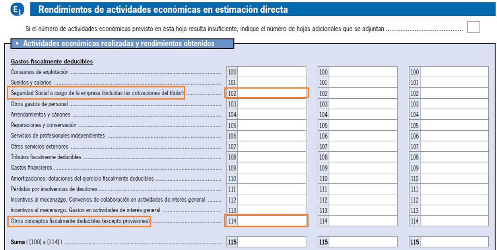
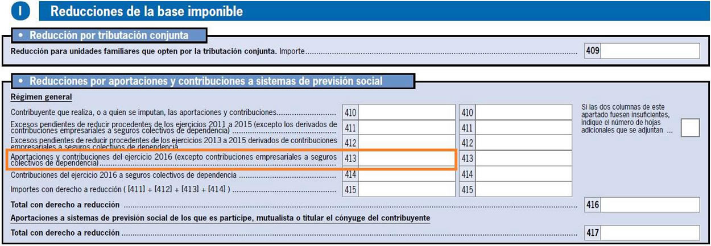
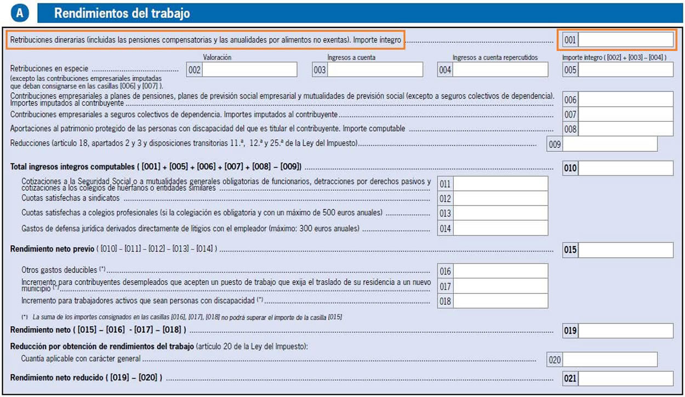
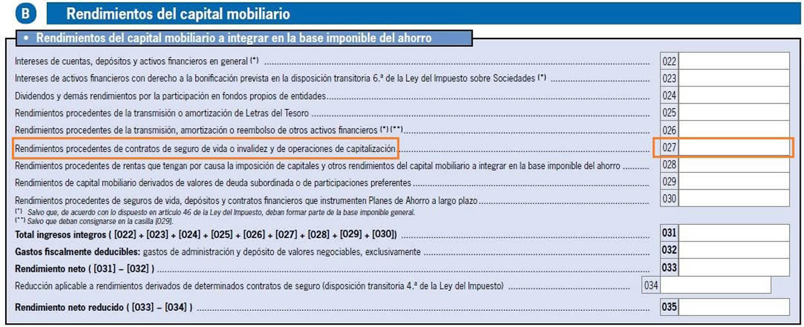

CÓMO MEJORAR LA FISCALIDAD
Mutual Médica representa para ti un importante ahorro fiscal
Solo por ser de Mutual Médica y tener contratado alguno de nuestros seguros de prestación social, podrás beneficiarte de hasta un 100% de desgravación del I.R.P.F. en tu próxima Declaración de la Renta.
¿Qué tratamiento fiscal tienen mis seguros?
De acuerdo con los artículos_30 y 51 de la Ley 35/2006 del IRPF y su disposición adicional 9ª puedes obtener hasta un 100% de desgravación fiscal de las cuotas pagadas a la mutualidad o de las prestaciones recibidas.
Seguro MEL (Médico de Ejercicio Libre)
Puedes deducir, a efectos de determinar el rendimiento neto de su actividad económica, las cantidades destinadas a Mutual Médica, con el límite que establece el artículo 30 de la Ley del I.R.P.F.
El límite máximo de gasto deducible se establece en el artículo 30 de la Ley 35/2006, de 28 de noviembre, del Impuesto sobre Renta de las Personas Físicas. De acuerdo con esta norma, tendrán la consideración de gasto deducible las cantidades abonadas en virtud de contratos de seguro, concertados con mutualidades de previsión social por profesionales no integrados en el régimen especial de la Seguridad Social de los trabajadores por cuenta propia o autónomos, cuando, a efectos de dar cumplimiento a la obligación prevista en la disposición adicional decimoquinta de la Ley 30/1995, de 8 de noviembre, de ordenación y supervisión de seguros privados (la Ley 3829/1995), actúen como alternativas al régimen especial de la Seguridad Social mencionado, en la parte que tenga por objeto la cobertura de contingencias atendidas por dicho régimen especial. Para el ejercicio 2016, Mutual Médica ha calculado que, con carácter general, este límite es de 13.023,79€. La Agencia Tributaria ha publicado, en la página 218 del Manual de la Renta de este ejercicio, el mismo límite máximo de gasto deducible.
Adicionalmente, las aportaciones que superen el máximo deducible pueden disfrutar de una reducción en la base imponible del I.R.P.F., en cumplimiento del artículo 51 de la Ley.
Otros seguros
El artículo 51 de la Ley del I.R.P.F. prevé reducciones a la base imponible general por aportaciones y contribuciones a sistemas de previsión social, como es el caso de Mutual Médica. Así, siempre que no exceda los límites establecidos, podrás reducir las aportaciones realizadas a los siguientes seguros:
Seguro de Jubilación (Tanto si hace aportaciones periódicas como únicas.)
Plan de Previsión Asegurado (Tanto si hace aportaciones periódicas como únicas.)
Seguro Incapacidad Profesional Permanente
A partir del ejercicio 2015, se estableció un límite único para todas las edades, equivalente a la cifra menor de las siguientes cantidades: 8.000 € o el 30% del total de rendimientos netos.
El tratamiento fiscal de las prestaciones que hayas recibido de Mutual Médica dependerá de las siguientes situaciones:
Si Mutual Médica es tu alternativa al RETA y ya te has deducido tus aportaciones al MEL como gasto de tu actividad médica...
La Ley del I.R.P.F. establece que las prestaciones recibidas por el contrato de seguros de previsión social, que hayan sido objeto de desgravación fiscal, se consideren como rendimientos del trabajo. Por tanto tributarán íntegramente al tipo impositivo que sea aplicable al beneficiario en función del nivel de ingresos en el ejercicio del cobro, independientemente de que se cobren en forma de capital o en forma de renta.
Si ya te has deducido las aportaciones realizadas a Mutual Médica por cualquier otro seguro que no sea el MEL...
La Ley del I.R.P.F. establece que las prestaciones recibidas por el contrato de seguros de previsión social, que hayan sido objeto de desgravación fiscal, se consideren como rendimientos del trabajo. Por tanto tributarán íntegramente al tipo impositivo que sea aplicable al beneficiario en función del nivel de ingresos en el ejercicio del cobro, independientemente de que se cobren en forma de capital o en forma de renta.
Si no te has desgravado tus aportaciones, tengas o no tengas a Mutual Médica como alternativa al RETA...
Si el mutualista es el perceptor, la prestación tributa por el I.R.P.F.; pero al no haber sido objeto de desgravación fiscal, la prestación dejaría de considerarse un rendimiento del trabajo para tratarse como un rendimiento del capital mobiliario.
Los rendimientos del capital mobiliario se cuantifican como la prestación percibida descontándole las primas pagadas. Para el ejercicio 2016, los rendimientos del capital mobiliario tributaban al 19% para rendimientos de hasta 6.000 €; al 21% para rendimientos de entre 6.000 € y 50.000 €, y al 23% para rendimientos superiores a 50.000 €.
En caso de que el perceptor no fue quien pagó las primas del seguro, la prestación tributaría por el Impuesto sobre Sucesiones y Donaciones.
¿Cómo introducir mis datos en la Declaración?
Para facilitarte el trabajo a la hora de hacer la Declaración de la Renta, vamos a mostrarte cómo y dónde introducir la información relativa a la mutualidad mediante una demostración gráfica de la web habilitada por la Agencia Tributaria.
Seguro MEL (Médico de Ejercicio Libre)
Si dispones del MEL como alternativa al RETA, puedes introducir el importe de las aportaciones efectuadas a Mutual Médica, hasta el límite del gasto deducible, en el apartado destinado a las Actividades económicas realizadas y rendimientos obtenidos en el recuadro 102 (seguridad Social a cargo de la empresa) o en el recuadro 114 (otros conceptos fiscalmente deducibles). Es importante enfatizar que solo se debe rellenar una de las dos casillas.
Recuadro 102/114 - Introduce aquí el importe de las cuotas pagadas a Mutual Médica.
En caso de que tus aportaciones excedan el límite máximo de gasto deducible (equivalente a la cifra menor de las siguientes cantidades: 8.000 € o el 30% del total de rendimientos netos), deberás hacer constar el importe que excede en la casilla 413 del apartado destinado a las Reducciones por aportaciones y contribuciones a sistemas de previsión social.
Recuadro 413: Aportaciones y contribuciones del ejercicio - Introduce en este recuadro el importe que excede el límite de gasto deducible.
(!) Para hacer el cálculo de los límites máximos de aportación, debes considerar el conjunto global de las aportaciones realizadas a Mutual Médica durante el ejercicio.
Otros seguros
Si tienes contratado con nosotros cualquier otro seguro que no sea el MEL, el importe de las aportaciones realizadas a la mutualidad debe introducirse en la casilla 413 del apartado destinado a las Reducciones por aportaciones y contribuciones a sistemas de previsión social.
Recuadro 413: Aportaciones y contribuciones del ejercicio - Introduce en este recuadro el importe, teniendo en cuenta los límites establecidos (la cifra menor de las siguientes cantidades: 8.000 € o el 30% del total de rendimientos netos).
(!) Para hacer el cálculo de los límites máximos de aportación, debes considerar el conjunto global de las aportaciones realizadas a Mutual Médica durante el ejercicio (por ejemplo, sumando las cuotas realizadas de tu seguro al largo del año –o las cuotas de todos tus seguros, en caso de tener más de uno contratado).
Si ya te has deducido tus aportaciones realizadas a Mutual Médica, tengas contratado el MEL o cualquier otro seguro...
... Tienes que hacer constar el importe de las prestaciones percibidas de Mutual Médica en la sección de la letra A, destinada a los Rendimientos del Trabajo.
Recuadro 001: Retribuciones dinerarias - Introduce en esta casilla el importe íntegro de las prestaciones que anteriormente hayas introducido para ser desgravadas.
Si no te has podido desgravar alguna de tus aportaciones, tengas o no tengas a Mutual Médica como alternativa al RETA...
Las prestaciones percibidas de Mutual Médica correspondientes a seguros cuyas aportaciones no hayan sido objeto de desgravación fiscal, las tienes que hacer constar en la sección de la letra B, destinada a los Rendimientos del capital mobiliario.
Recuadro 027: Rendimientos procedentes de contratos de seguros de vida, invalidez y de operaciones de capitalización - Introduce en este apartado el importe de las prestaciones percibidas de Mutual Médica si anteriormente no te has desgravado las aportaciones correspondientes a cualquiera de tus seguros.
Estoy a punto de jubilarme.
¿Cómo reducirme el 40% al cobrar mi seguro?
Si tienes prestaciones de seguros de jubilación y otros sistemas de previsión social pendientes de cobro, debes tener en cuenta que la reducción del 40% por prestaciones cobradas en forma de capital procedentes de aportaciones realizadas antes del año 2007 solo se podrá aplicar cuando el cobro de la prestación sea en el mismo ejercicio fiscal en el que se produzca la contingencia (jubilación, invalidez, enfermedad grave o paro de larga duración) o en los dos meses siguientes (Disposición Transitoria XIIª de la Ley 35/2006 de 28 de noviembre, del IRPF, en redacción que se establece en la Ley 26/2014 de 27 de noviembre).
¿Cómo cobrar una prestación por baja laboral?
El cobro de una prestación por baja laboral puede tener consecuencias en tu Declaración de la Renta. Te recomendamos que a la hora de efectuar el cobro indiques una retención del XX% para que te afecte el mínimo a tu Declaración. Si tu baja es por maternidad, cuyo pago abarca dos años fiscales pero se realiza en una sola vez, es mejor que dividas la prestación en dos partes para optimizar al máximo tu fiscalidad. Comunícalo a uno de nuestros asesor para que podamos ajustarnos a tus necesidades.
Para más información, puedes ponerte en contacto con alguno de nuestros asesores:
¿Cómo descargar mi certificado fiscal?
Puedes acceder a esta información desde el área del mutualista.